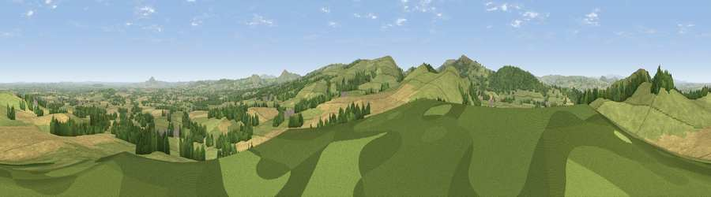

Broom Hill
#2682 in England · top 6% of its area beats it · near PulverbatchThe view, rendered

A 360° render of this exact spot computed from the terrain model, tree cover and land cover — summer colours, afternoon light, calibrated against photographs of famous viewpoints. Real trees, hedges and buildings will differ in detail.
The panorama
Grey silhouette: terrain skyline in each direction (720 bearings, Earth curvature and refraction included). Dashed green: skyline with trees (+15 m) and buildings (+8 m) as obstacles. Blue strip: how far the ground is visible on each bearing.
Where the view opens
Wedge length = distance to the farthest visible ground on that bearing (vegetation-aware). Rings at 10, 25 and 50 km.
What fills the view
53% grassland · 29% cropland · 17% woodland ·
Angular shares of the visible panorama (visual magnitude), not map area. Landscape diversity 0.45 (0–1 Shannon).
Key numbers
More beautiful places nearby
The staircase of upgrades: each row has a higher view potential than everything closer. Driving times are estimates from straight-line distance, calibrated against real road routing — check an actual route before setting out.
| Place | Direction | Drive | Score |
|---|---|---|---|
| Church Hill | NNW · 1 km | ~2 min | 76.1 |
| Viewpoint near Plealey | N · 2 km | ~5 min | 78.0 |
| Earl's Hill | NW · 2 km | ~5 min | 82.2 |
| The Lawley | SE · 10 km | ~19 min | 85.8 |
| Viewpoint near Little Wenlock | ENE · 21 km | ~35 min | 86.6 |
| North Hill | SSE · 67 km | ~90 min | 86.8 |
| Worcestershire Beacon | SSE · 68 km | ~91 min | 87.1 |
| Viewpoint near Bossington | SSW · 162 km | ~184 min | 88.3 |
52.62535, -2.85901 · source: dobih hill · position refined by local search. Computed location — check access rights before visiting.